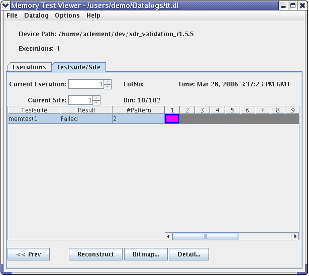

Testsuite/Site tab
To see the testsuite results per site for the current execution number click the Testsuite/Site tab:

The window tab area displays an example of data for one execution number (Current Execution, selected previously). The pane in the viewing area lists all testsuites (for the selected execution number) and all sites (numbered columns) in this testsuite, with the current site selected (in this example: site 1).
To change the current execution, type in the execution number of your choice, or scroll to it using the input field at the top of the tabbed panel.
To change the current site number, type in the site number of your choice, or scroll to it using the second to top input field of the tabbed panel. Alternatively, you can click the cell representing the testsuite and site to highlight it. The highlighted cell stays always visible.
After selecting the execution and site number you can:
- Click Reconstruct to reconstruct the current site. A pattern dialog opens.
- Click Bitmap to view the selected data with the BFM Viewer. A pattern dialog opens.
- Click Details to view per pin details. A Detail window opens.